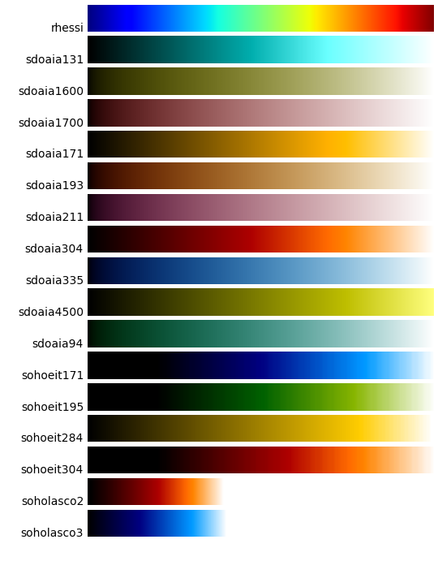

SunPy makes use of matplotlib <http://matplotlib.org/> for all of its plotting needs as such tries to follow the matplotlib plotting philosophy. It is therefore useful to go over how matplotlib works as background.
The tutorial provided here is a summary of one that can be found in the matplotlib usage documentation <http://matplotlib.org/faq/usage_faq.html/>.
Matplotlib provides two main pathways for plotting. One is meant for interactive use (e.g. command-line) and the other for non-interactive use (e.g. modules). It is important to recognize though that the interactive-use pathway (referred to as pyplot) just provides shortcuts doing many of the more advanced non-interactive functions in the background. It is therefore possible to switch between the two as necessary and convenient and it is possible to use pyplot in non-interactive way. In this manner pyplot is just a shortcut making it quicker to set up plot axes and figures. In order to get access to the full interactive capabilities of pyplot it is necessary to turn this feature on. This will be discussed below. Pylab is another matplotlib usage scenario but it is essentially just pyplot with the interactive capabilities turned on and numpy and matplotlib imported into the main namespace.
Here is an example of pyplot usage
import matplotlib.pyplot as plt
plt.plot(range(10), range(10))
plt.title("A simple Plot")
plt.show()
The show() command open a plot on the screen and blocks execution (meaning you can't do anything with the prompt or your script freezes) until the plot window is closed. For reasons that are not very clear, the creators of matplotlib designed the show() command so that it would only work once. If you were to call show() on the plt object again after the above code is executed nothing happens. Apparently, this confusing behavior is something that the matplotlib devs get complaints about often and so this may change in the future (or may already have changed depending on your choice of backend). A discussion about this can be found here <http://stackoverflow.com/questions/5524858/matplotlib-show-doesnt-work-twice>. Don't be confused by another command called draw(). This is only used while in interactive mode.
To turn on interactivity for pyplot use the command
plt.ion()
In interactive mode, the plot will appear at the first plot() command and most commands will update the plot as you call them. Here is an example
plt.plot(range(10), range(10))
plt.title("Simple Plot")
In this example, you'll see that the title appears right on the plot when you call it. Note that in this case the show command is useless as the plot shows up right when you create it. Also note that some commands will not automatically update the plot and you have to use the draw() command. The following command
plt.ioff()
turns off interactivity.
If you need more fine-grained control over plots the recommended path is to use pyplot and access the figures and axes objects. Here is an example
import matplotlib.pyplot as plt import numpy as np x = np.arange(0, 10, 0.2) y = np.sin(x) fig = plt.figure() ax = fig.add_subplot(111) ax.plot(x, y) plt.show()
Figure is the top-level container for all plot elements and axes is the top-level container for a particular plot. So the above example, creates a figure then creates an axes and then uses the pyplot plot() method to populate the plot in ax. You generally don't need to mess with the figure object but with this method you now have your hands on the ax object so you can do this like change the labels on the x and y axes or add a legend, etc. do whatever you want to it. In the previous section, pyplot took care of creating these objects for you so you don't have to worry about creating them yourself.
To be consistent with matplotlib, SunPy has developed a standard plotting policy which supports both simple and advanced matplotlib usage.
For quick and easy access to a plot all sunpy base objects (e.g. map, spectra, lightcurve) define their own peek() command. For example you can do the following
import sunpy smap = sunpy.make_map(sunpy.EIT_195_IMAGE) smap.peek(draw_limb=True)
This creates a plot window with all axes defined, a plot title, and the image of the map data all defined by the contents of the map. As this is command makes use of show(), in non-interactive mode the plot window blocks and must be closed before doing anything else. This is meant as a quick way to visualize the contents of a sunpy object you've created.
For more advanced plotting the base sunpy objects also provide a plot() command. This command is similar to the pyplot plot() command in that it will create a figure and axes object for you if you haven't already. It returns a figure object and does not create a plot window. With the figure object in your hands you can reach in and grab the axes and therefore manipulate the plot as you see fit. Here is an example of this at work
import sunpy import matplotlib.pyplot as plt smap = sunpy.make_map(sunpy.EIT_195_IMAGE) smap.plot() smap.draw_limb() plt.show()
This output of this example is equivalent to one in the previous section. The map.plot() command is equivalent to ax.plot(x,y) command which we introduced in section 3. Similar to that command it will create a figure for you if you haven't created on yourself. For advanced plotting you'll want to create it yourself.
fig = plt.figure() ax = plt.subplot(1,1,1) smap.plot() plt.colorbar() ax.plot([-1000,1000], [0,0], color="white") plt.show()
The above a plot of line across the map. Using the fig.gca() command to get access to the axes object most anything can be done to the plot and the plot can be displayed as usual using the show() command. Here is another example
from matplotlib import patches fig = plt.figure() ax = plt.subplot(1,1,1) smap.plot() rect = patches.Rectangle([-350, -650], 500, 500, color = 'white', fill=False) ax.add_artist(rect) plt.show()
Finally, here is a more complex example, starting from the beginning:
from matplotlib import patches
import sunpy
import matplotlib.pyplot as plt
smap = sunpy.make_map(sunpy.AIA_171_IMAGE)
submap = map.submap([-100-250, -100+250], [-400-250, -400+250])
rect = patches.Rectangle([-100-250, -400-250], 500, 500, color = 'white', fill=False)
fig = plt.figure()
ax1 = fig.add_subplot(2,1,1)
smap.plot()
ax1.add_artist(rect)
ax2 = fig.add_subplot(2,1,2)
submap.plot()
submap.draw_grid(grid_spacing=10)
ax2.set_title('submap')
fig.subplots_adjust(hspace=0.4)
plt.show()
The above example creates two side by side plots one with the overall view of the Sun with a small area marked with a white box. That smaller view is then shown in the plot below it. The spacing between the two plots is controlled by fig.subplots_adjust().
There are a number of color maps defined in SunPy which are used for data from particular missions (e.g. SDO/AIA). A simple example on how to use the color maps provided by SunPy:
from sunpy.cm import cm
# cmlist is a dictionary with all of the color tables
# to list all of the keys of the dictionary
cm.cmlist.keys()
# to grab a particular colortable then
cmap = cm.cmlist.get('sdoaia94')
# you can also get a visual representation of all of the color tables
cm.show_colormaps()

These can be used with the standard commands to change the colormap:
import sunpy
from sunpy.cm import cm
cmap = cm.cmlist.get('sdoaia94')
smap = sunpy.make_map(sunpy.AIA_171_IMAGE)
fig = plt.figure()
ax = plt.subplot(1,1,1)
smap.plot(cmap=cmap)
plt.show()